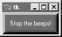
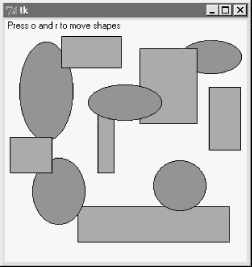

| I l@ve RuBoard |
|
8.7 Time Tools, Threads, and AnimationThe last stop on our widget tour is the most unique. Tkinter also comes with a handful of tools that have to do with the event-driven programming model, not graphics displayed on a computer screen. Some GUI applications need to perform background activities periodically. For example, to "blink" a widget's appearance, we'd like to register a callback handler to be invoked at regular time intervals. Similarly, it's not a good idea to let a long-running file operation block other activity in a GUI; if the event loop could be forced to update periodically, the GUI could remain responsive. Tkinter comes with tools for both scheduling such delayed actions and forcing screen updates:
We won't go into further details on all of these tools here; see other Tk and Tkinter documentation for more information. 8.7.1 Using Threads with GUIsKeep in mind that for many programs, Python's thread support that we met in Chapter 3, can serve some of the same roles as the Tkinter tools listed in the previous section. For instance, to avoid blocking a GUI during a long-running file or socket transfer, the transfer can simply be run in a spawned thread, while the rest of the program continues to run normally. We'll meet such threaded GUI programs in Part III (e.g., PyMailGui in Chapter 11). Similarly, GUIs that must watch for inputs on pipes or sockets can do so in spawned threads (or after callbacks), without blocking the GUI itself. If you do use threads in Tkinter programs, however, only the main thread (the one that built the GUI and started the mainloop) can make GUI calls. Even things like the update method described in the previous section cannot be called from spawned threads in a GUI program -- they'll likely trigger very strange program crashes. This GUI thread story may be improved in future Python and Tkinter releases, but imposes a few structural and platform-specific constraints today. For example, because spawned threads cannot perform GUI processing, they must generally communicate with the main thread using global variables, as required by the application. A thread that watches a socket, for instance, might simply set global variables that trigger GUI changes in after event callbacks. Note that this is not a Python or Tkinter limitation (it's much lower in the software hierarchy that runs your GUI), and may go away in the future. In addition, some Tkinter canvas calls may actually be thread-safe (see the animation script in Example 8-31). We'll revisit this limitation later in this book, when we meet larger threaded GUI programs. 8.7.2 Using the after MethodThe after method allows scripts to schedule a callback handler to be run at some time in the future, and we'll use this often in later examples in this book. For instance, in Chapter 9 we'll meet a clock program that uses after to wake up 10 times per second and check for a new time, and an image slideshow program that uses after to schedule the next photo display (see PyClock and PyView). To illustrate the basics of scheduled callbacks, Example 8-26 does something a bit different. Example 8-26. PP2E\Gui\Tour\alarm.py#!/usr/local/bin/python
from Tkinter import *
class Alarm(Frame):
def repeater(self): # on every N millisecs
self.bell() # beep now
self.stopper.flash() # flash button now
self.after(self.msecs, self.repeater) # reschedule handler
def __init__(self, msecs=1000): # default = 1 second
Frame.__init__(self)
self.msecs = msecs
self.pack()
stopper = Button(self, text='Stop the beeps!', command=self.quit)
stopper.pack()
stopper.config(bg='navy', fg='white', bd=8)
self.stopper = stopper
self.repeater()
if __name__ == '__main__': Alarm(msecs=1000).mainloop()
This script builds the window in Figure 8-37 and periodically calls both the button widget's flash method to make the button flash momentarily (it alternates colors quickly), and the Tkinter bell method to call your system's sound interface. The repeater method beeps and flashes once, and schedules a callback to be invoked after a specific amount of time with the after method. Figure 8-37. Stop the beeps!But after doesn't pause the caller: callbacks are scheduled to occur in the background, while the program performs other processing -- technically, as soon as the Tk event loop is able to notice the time rollover. To make this work, repeater calls after each time through, to reschedule the callback. Delayed events are one-shot callbacks; to repeat the event, we need to reschedule. The net effect is that when this script runs, it starts beeping and flashing once its one-button window pops up. And it keeps beeping and flashing. And beeping. And flashing. Other activities and GUI operations don't affect it. Even if the window is iconified, the beeping continues because Tkinter timer events fire in the background. You need to kill the window or press the button to stop the alarm. By changing the msecs delay, you can make this beep as fast or slow as your system allows (some platforms can't beep as fast as others). And this may or may not be the best demo to launch in a crowded office, but at least you've been warned. 8.7.2.1 Hiding and redrawing widgets and windowsThe button flash method flashes the widget, but it's easy to dynamically change other appearance options of widgets like buttons, labels, and text, with the widget config method. For instance, you can also achieve a flash-like effect by manually reversing foreground and background colors with the widget config method, in scheduled after callbacks. Just for fun, Example 8-27 specializes the alarm to go a step further. Example 8-27. PP2E\Gui\Tour\alarm-hide.pyfrom Tkinter import *
import alarm
class Alarm(alarm.Alarm): # change alarm callback
def repeater(self): # on every N millisecs
self.bell() # beep now
if self.shown:
self.stopper.pack_forget() # hide or erase button now
else: # or reverse colors, flash...
self.stopper.pack()
self.shown = not self.shown # toggle state for next time
self.after(self.msecs, self.repeater) # reschedule handler
def __init__(self, msecs=1000): # default = 1 second
self.shown = 0
alarm.Alarm.__init__(self, msecs)
if __name__ == '__main__': Alarm(msecs=500).mainloop()
When this script is run, the same window appears, but the button is erased or redrawn on alternating timer events. The widget pack_forget method erases (unmaps) a drawn widget, and pack makes it show up again; grid_forget and grid similarly hide and show widgets in a grid. The pack_forget method is useful for dynamically drawing and changing a running GUI. For instance, you can be selective about which components are displayed, and build widgets ahead of time and show them only as needed. Here, it just means that users must press the button while it's displayed, or else the noise keeps going. To hide and unhide the entire window instead of just one widget within it, use the top-level window widget withdraw and deiconify methods. The withdraw method, demonstrated in Example 8-28, completely erases the window and its icon (use iconify if you want the window's icon to appear during a hide), and the state method returns the window's current state ("normal", "iconic", or "withdrawn"). These are also useful to pop up prebuilt dialog windows dynamically, but are perhaps less practical here. Example 8-28. PP2E\Gui\Tour\alarm-withdraw.pyfrom Tkinter import *
import alarm
class Alarm(alarm.Alarm):
def repeater(self): # on every N millisecs
self.bell() # beep now
if self.master.state() == 'normal': # is window displayed?
self.master.withdraw() # hide entire window, no icon
else: # iconify shrinks to an icon
self.master.deiconify() # else redraw entire window
self.master.lift() # and raise above others
self.after(self.msecs, self.repeater) # reschedule handler
if __name__ == '__main__': Alarm().mainloop() # master = default Tk root
This works the same, but the entire window appears or disappears on beeps -- you have to press it when it's shown. There are lots of other effects you could add to the alarm. Whether your buttons and windows should flash and disappear or not, though, probably depends less on Tkinter technology than on your users' patience. 8.7.3 Simple Animation TechniquesApart from the direct shape moves in the canvasDraw example, all of the GUIs presented so far in this part of the book have been fairly static. This last section shows you how to change that, by adding simple shape movement animations to the canvas drawing example listed in Example 8-15. It also demonstrates the notion of canvas tags -- the move operations performed here move all canvas objects associated with a tag at once. All oval shapes move if you press "o", and all rectangles move if you press "r"; as mentioned earlier, canvas operation methods accept both object IDs and tag names. But the main goal here is to illustrate simple animation techniques using the time-based tools described earlier in this section. There are three basic ways to move objects around a canvas:
Of these three schemes, the first yields the smoothest animations but makes other operations sluggish during movement, the second seems to yield slower motion than the others but is safer than using threads in general, and the last two both allow multiple objects to be in motion at the same time. 8.7.3.1 Using time.sleep loopsThe next three sections demonstrate the code structure of all three approaches in turn, with new subclasses of the canvasDraw example we met in Example 8-15. Example 8-29 illustrates the first approach. Example 8-29. PP2E\Gui\Tour\canvasDraw_tags.py##################################################################
# add tagged moves with time.sleep (not widget.after or threads);
# time.sleep does not block the gui event loop while pausing, but
# screen not redrawn until callback returns or widget.update call;
# the currently running onMove callback gets exclusive attention
# until it returns: others pause if press 'r' or 'o' during move;
##################################################################
from Tkinter import *
import canvasDraw, time
class CanvasEventsDemo(canvasDraw.CanvasEventsDemo):
def __init__(self, parent=None):
canvasDraw.CanvasEventsDemo.__init__(self, parent)
self.canvas.create_text(75, 8, text='Press o and r to move shapes')
self.canvas.master.bind('<KeyPress-o>', self.onMoveOvals)
self.canvas.master.bind('<KeyPress-r>', self.onMoveRectangles)
self.kinds = self.create_oval_tagged, self.create_rectangle_tagged
def create_oval_tagged(self, x1, y1, x2, y2):
objectId = self.canvas.create_oval(x1, y1, x2, y2)
self.canvas.itemconfig(objectId, tag='ovals', fill='blue')
return objectId
def create_rectangle_tagged(self, x1, y1, x2, y2):
objectId = self.canvas.create_rectangle(x1, y1, x2, y2)
self.canvas.itemconfig(objectId, tag='rectangles', fill='red')
return objectId
def onMoveOvals(self, event):
print 'moving ovals'
self.moveInSquares(tag='ovals') # move all tagged ovals
def onMoveRectangles(self, event):
print 'moving rectangles'
self.moveInSquares(tag='rectangles')
def moveInSquares(self, tag): # 5 reps of 4 times per sec
for i in range(5):
for (diffx, diffy) in [(+20, 0), (0, +20), (-20, 0), (0, -20)]:
self.canvas.move(tag, diffx, diffy)
self.canvas.update() # force screen redraw/update
time.sleep(0.25) # pause, but don't block gui
if __name__ == '__main__':
CanvasEventsDemo()
mainloop()
All three of the scripts in this section create a window of blue ovals and red rectangles as you drag new shapes out with the left mouse button. The drag-out implementation itself is inherited from the superclass. A right mouse button click still moves a single shape immediately, and a double-left click still clears the canvas too -- other operations inherited from the original superclass. In fact, all this new script really does is change the object creation calls to add tags and colors here, add a text field, and add bindings and callbacks for motion. Figure 8-38 shows what this subclass's window looks like after dragging out a few shapes to be animated. Figure 8-38. Drag-out objects ready to be animatedThe "o" and "r" keys are set up to start animation of all the ovals and rectangles you've drawn, respectively. Pressing "o", for example, makes all the blue ovals start moving synchronously. Objects are animated to mark out five squares around their location, and move four times per second. New objects drawn while others are in motion start to move too, because they are tagged. You need to run these live to get a feel for the simple animations they implement, of course (you could try moving this book back and forth and up and down, but it's not quite the same, and might look silly in public places). 8.7.3.2 Using widget.after eventsThe main drawback of this first approach is that only one animation can be going at once: if you press "r" or "o" while a move is in progress, the new request puts the prior movement on hold until it finishes because each move callback handler assumes the only thread of control while it runs. Screen updates are a bit sluggish while moves are in progress too, because they only happen as often as manual update calls are made (try a drag-out or a cover/uncover of the window during a move to see for yourself). Example 8-30 specializes just the moveInSquares method to remove such limitations. Example 8-30. PP2E\Gui\Tour\canvasDraw_tags_after.py########################################################################
# similar, but with .after scheduled events, not time.sleep loops;
# because these are scheduled events, this allows both ovals and
# rectangles to be moving at the _same_ time and does not require
# update calls to refresh the gui (only one time.sleep loop callback
# can be running at once, and blocks others started until it returns);
# the motion gets wild if you press 'o' or 'r' while move in progress,
# though--multiple move updates start firing around the same time;
########################################################################
from Tkinter import *
import canvasDraw_tags
class CanvasEventsDemo(canvasDraw_tags.CanvasEventsDemo):
def moveEm(self, tag, moremoves):
(diffx, diffy), moremoves = moremoves[0], moremoves[1:]
self.canvas.move(tag, diffx, diffy)
if moremoves:
self.canvas.after(250, self.moveEm, tag, moremoves)
def moveInSquares(self, tag):
allmoves = [(+20, 0), (0, +20), (-20, 0), (0, -20)] * 5
self.moveEm(tag, allmoves)
if __name__ == '__main__':
CanvasEventsDemo()
mainloop()
This version lets you make both ovals and rectangles move at the same time -- drag out a few ovals and rectangles, and then press "o" and then "r" right away to make this go. In fact, try pressing both keys a few times; the more you press, the more the objects move, because multiple scheduled events are firing and moving objects from wherever they happen to be positioned. If you drag out a new shape during a move, it starts moving immediately as before. 8.7.3.3 Using multiple time.sleep loop threadsRunning animations in threads can sometimes achieve the same effect; it can be dangerous to update the screen from a spawned thread in general, but works in this example, at least on Windows. Example 8-31 runs each animation task as an independent and parallel thread. That is, each time you press the "o" or "r" keys to start an animation, a new thread is spawned to do the work. This works on Windows, but failed on Linux at the time I was writing this book -- the screen is not updated as threads change it, so you won't see any changes until later GUI events. Example 8-31. PP2E\Gui\Tour\canvasDraw_tags_thread.py########################################################################
# similar, but run time.sleep loops in parallel with threads, not
# .after events or single active time.sleep loop; because threads run
# in parallel, this also allows ovals and rectangles to be moving at
# the _same_ time and does not require update calls to refresh the gui:
# in fact, calling .update() can make this _crash_ today, though some
# canvas calls seem to be thread safe or else this wouldn't work at all;
########################################################################
from Tkinter import *
import canvasDraw_tags
import thread, time
class CanvasEventsDemo(canvasDraw_tags.CanvasEventsDemo):
def moveEm(self, tag):
for i in range(5):
for (diffx, diffy) in [(+20, 0), (0, +20), (-20, 0), (0, -20)]:
self.canvas.move(tag, diffx, diffy)
time.sleep(0.25) # pause this thread only
def moveInSquares(self, tag):
thread.start_new_thread(self.moveEm, (tag,))
if __name__ == '__main__':
CanvasEventsDemo()
mainloop()
This version lets you move shapes at the same time just like Example 8-30, but this time it's a reflection of threads running in parallel. In fact, this uses the same scheme as the first time.sleep version. Here, though, there is more than one active thread of control, so move handlers can overlap in time -- time.sleep only blocks the calling thread, not the program at large. This seems to work (at least on Windows), but it is usually safer to have your threads do number crunching only, and let the main thread (the one that built the GUI) handle any screen updates. It's not impossible that GUI threads may be better supported in later Tkinter releases, so see more recent releases for more details. 8.7.3.4 Other animation optionsWe'll revisit animation in Chapter 9's PyDraw example; there, all three techniques will be resurrected to move shapes, text, and photos to arbitrary spots on a canvas marked with a mouseclick. And although the canvas widget's absolute coordinate system make it the workhorse of most nontrivial animations, Tkinter animation in general is limited mostly by your imagination. As we saw in the flashing and hiding alarm examples earlier, it's easy to change the appearance of other kinds of widgets dynamically too; you can even erase and redraw widgets and windows on the fly. I should also note that the sorts of movement and animation techniques shown in this chapter and the next are suitable for many game-like programs, but not all. For more advanced 3D animation needs, be sure to also see the support in the PIL extension package for common animation and movie file formats such as FLI and MPEG. As currently implemented, Python is not widely used as the sole implementation language of graphic-intensive game programs, but it can still be used as both a prototyping and scripting language for such products.[4] And when integrated with 3D graphics libraries, it can serve even broader roles. See http://www.python.org for links to other available extensions in this domain.
|
| I l@ve RuBoard |
|